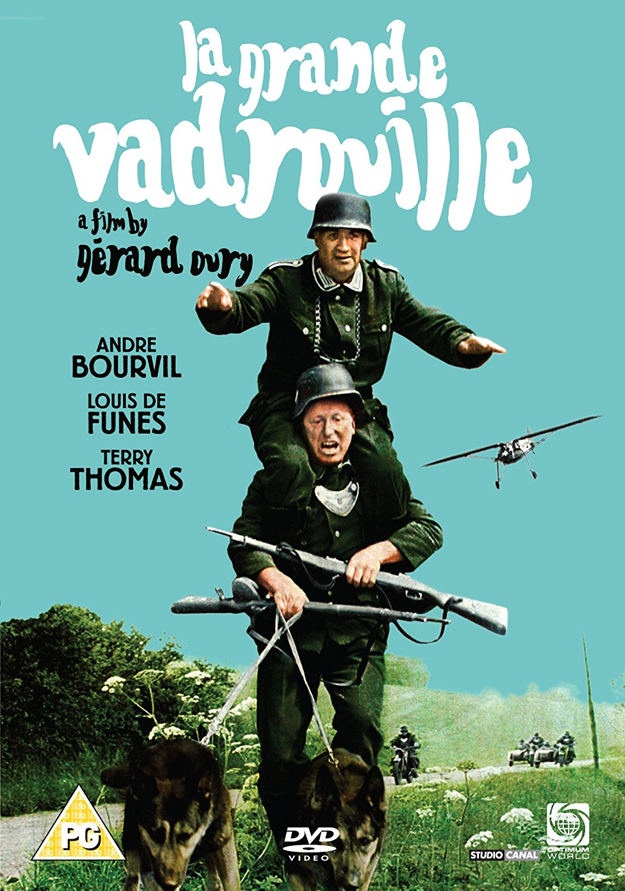
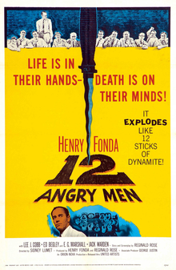

Ethan Fraenkel
Student and programmer
I am studying Law and Politics at Queen Mary University of London
Have a lookFavorite movies
|  |
La grande vadrouilleA 1966 French comedy film about two ordinary Frenchmen helping the crew of a Royal Air Force bomber shot down over Paris make their way through German-occupied France to escape arrest. |
 |
Schindler's listThe film follows Oskar Schindler, a Sudeten German businessman, who saved the lives of more than a thousand mostly Polish-Jewish refugees from the Holocaust by employing them in his factories during World War II. It stars Liam Neeson as Schindler, Ralph Fiennes as SS officer Amon Göth, and Ben Kingsley as Schindler's Jewish accountant Itzhak Stern. |
|  | 12 angry menThis trial film tells the story of a jury made up of 12 men as they deliberate the conviction or acquittal of a defendant on the basis of reasonable doubt, forcing the jurors to question their morals and values. |
About this page
This page has been coded during the FullStack program @LeWagon. That was probably the best experience of my entire life.